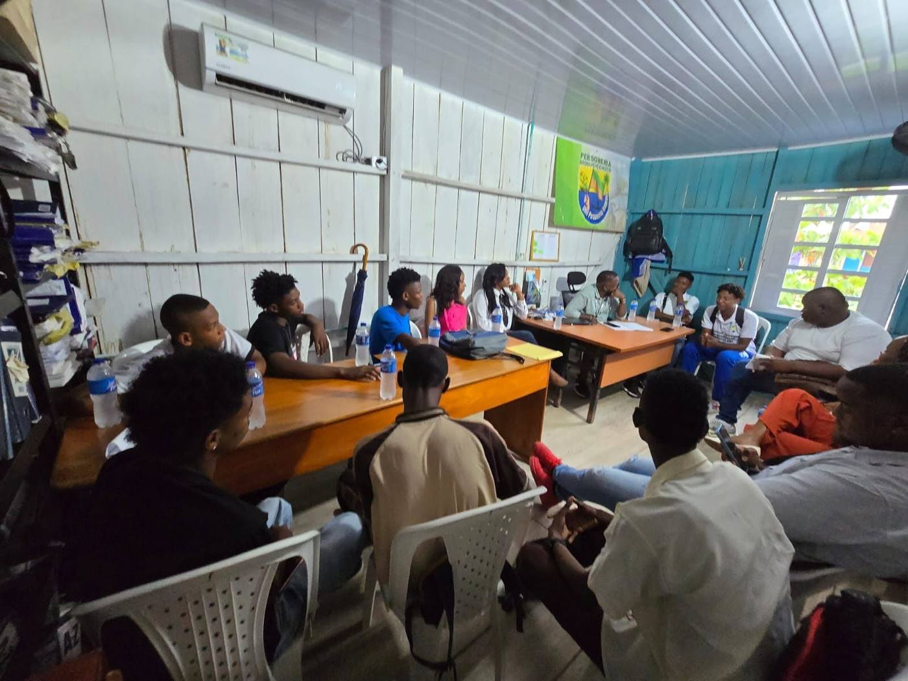
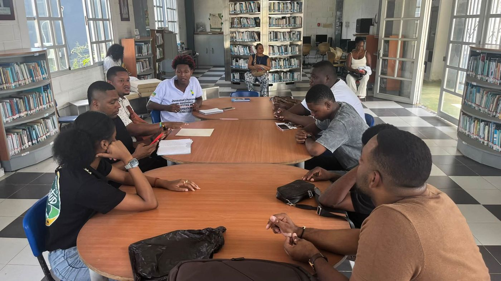
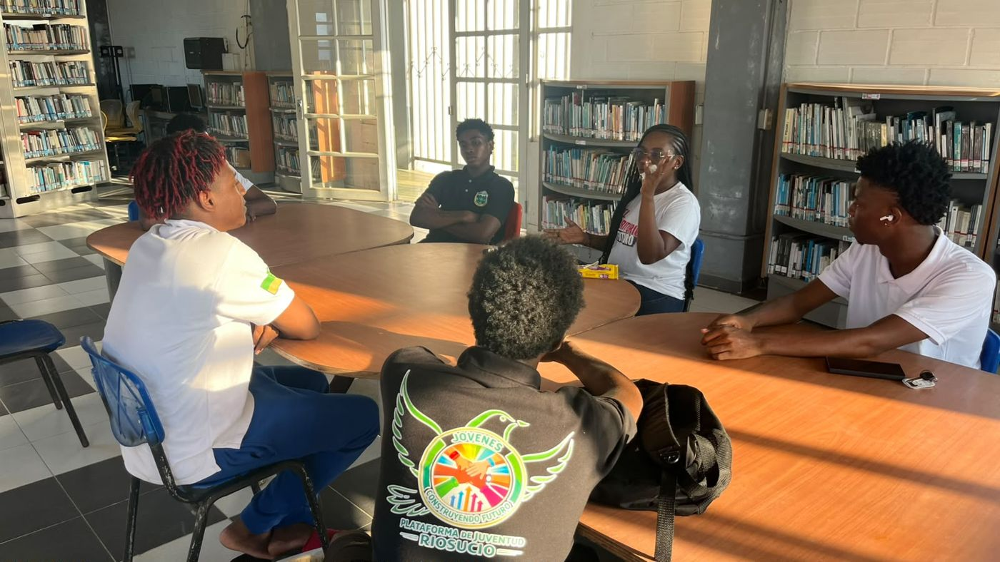

Transparencia y gestión
Los documentos que respaldan a la plataforma, con quién hemos trabajado y cómo rendimos cuentas.
Resoluciones, actas y acuerdos
Los documentos que dan respaldo legal a la plataforma y a su funcionamiento interno.
Reforma del Reglamento Interno y nuevos cargos
Crea los cargos de Vicepresidente General, Vicepresidente Ejecutivo y Asesor; nombra a Yoimar Luis Llorente Zúñiga como Vicepresidente Ejecutivo 2026–2028.
Registro de la actualización de la plataforma, período 2026–2028
Reconoce la Junta Directiva electa y ordena el seguimiento al plan de acción. Se comunica a la Alcaldía, la Procuraduría y Colombia Joven.
Asamblea General de Actualización
Elección por unanimidad de la Junta Directiva, entrega de credenciales y posesión de los cargos (Oficio PMJR-025-2026).
Constitución de la Asociación Juvenil AJPMJR
Personería jurídica propia, NIT 902.072.942-3, inscrita el 27 de mayo de 2026.
Creación de las Juntas Barriales de las Juventudes
Instancias asesoras y operativas en los barrios Escolar, Benjamín, Centro, Makenta, El Paraíso y Villarifaña, a cargo de la organización barrial de la Semana de la Juventud.
Reglamento de la Comisión de Ética
Regula la conducta y los procedimientos éticos de los integrantes de la plataforma.
Plan de Acción 2026–2027
Hoja de ruta de la plataforma, con subplanes por entidad para la articulación institucional.
Delegación Departamental ante la Plataforma Nacional
Designación del delegado del Chocó, registrada por la Procuraduría Regional mediante Resolución No. 002.
Con quién hemos trabajado este año
Reuniones, oficios y espacios de articulación de la plataforma.
Comisión a Bogotá
Ministerios de Agricultura, Culturas e Interior; representantes a la Cámara Omar Francisco Vidal Rojas y James Hermenegildo Mosquera Torres.
Médicos del Mundo
Jornada de formación y atención en salud mental y salud sexual y reproductiva en la Casa de la Juventud.
Concejo de Juventud y Alcaldía
Reunión con el Consejo Municipal de Juventud y el alcalde municipal.
Gobernación del Chocó
Reuniones con la Secretaría de Integración Social para coordinar el plan de trabajo con las juventudes.
Personería Municipal
Mesa con la Personería, la Comisaría de Familia, el Coordinador de Juventud y los consejeros sobre la Casa de la Juventud y la transparencia en los recursos para jóvenes.
Consejería Presidencial para la Reconciliación
Reunión en el DAPRE con el asesor presidencial Fernando Aguirre. Se concertó una visita a Riosucio y una iniciativa de capacidades para la vida y emprendimiento juvenil.
Congreso de la República
Audiencia pública Curul Joven por invitación de la representante Catherine Juvinao.
Agencia de Renovación del Territorio
Propuesta para garantizar la participación juvenil en las mesas PDET y acuerdos de capacitación sobre el Banco de Proyectos PDET.
Médicos del Mundo y Pedeguita y Mancilla
Formación en salud mental y salud sexual y reproductiva, y trabajo con jóvenes del Consejo Comunitario.
Ministerio de Educación
Participación en el lanzamiento del IV Plan Nacional Decenal de Educación 2026–2035 en Bogotá.
Restitución de Tierras y ACNUR
Taller de orientación para 40 jóvenes sobre restitución de tierras y derechos de las víctimas.
Reconciliación en el territorio
Asistencia técnica de la Consejería en Riosucio y lanzamiento de la estrategia "La Reconciliación la escribimos juntos".
Semana de la Juventud
Con los colegios, la Fundación Santa Sofía de Asís, el Consejero Nacional de Juventud y las dependencias municipales.
Del Territorio al Futuro
La Escuela de Tecnologías fue seleccionada como beneficiaria.
Defensoría del Pueblo
Taller “Avivando el fuego de la participación juvenil” en Riosucio.
Le contamos a la comunidad
A finales de noviembre de 2026 la plataforma hará su rendición de cuentas pública (fecha por confirmar). Aquí publicaremos la fecha, el lugar y el informe.


